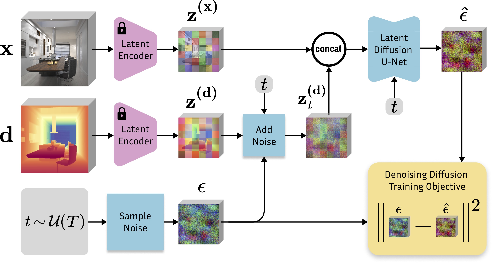
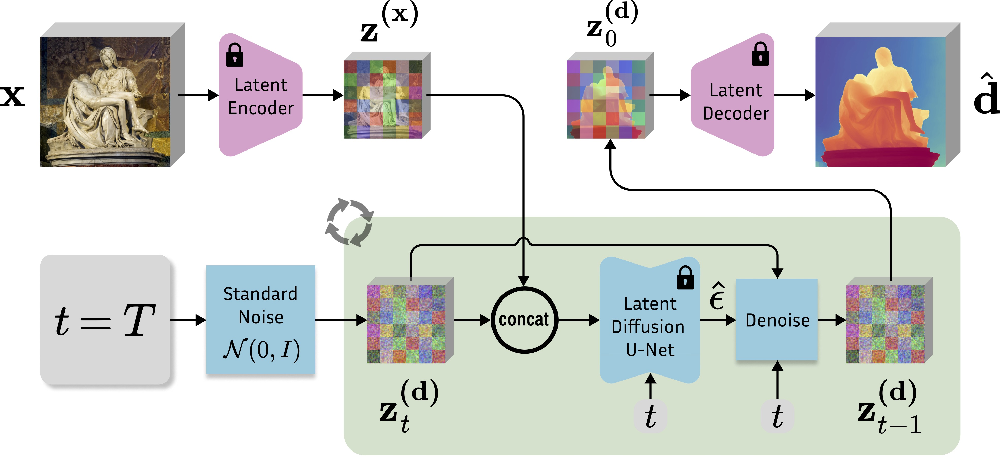

We present Marigold, a diffusion model and associated fine-tuning protocol for monocular depth estimation. Its core principle is to leverage the rich visual knowledge stored in modern generative image models. Our model, derived from Stable Diffusion and fine-tuned with synthetic data, can zero-shot transfer to unseen data, offering state-of-the-art monocular depth estimation results.
The gallery below presents several images from the internet and a comparison of Marigold with the previous state-of-the-art method LeRes. Use the slider and gestures to reveal details on both sides.


Starting from a pretrained Stable Diffusion, we encode the image $x$ and depth $d$ into the latent space using the original Stable Diffusion VAE. We fine-tune just the U-Net by optimizing the standard diffusion objective relative to the depth latent code. Image conditioning is achieved by concatenating the two latent codes before feeding them into the U-Net. The first layer of the U-Net is modified to accept concatenated latent codes.
Given an input image $x$, we encode it with the original Stable Diffusion VAE into the latent code $z^{(x)}$, and concatenate with the depth latent $z^{(d)}_t$ before giving it to the modified fine-tuned U-Net on every denoising iteration. After executing the schedule of $T$ steps, the resulting depth latent $z^{(d)}_0$ is decoded into an image, whose 3 channels are averaged to get the final estimation $\hat d$.
Quantitative comparison of Marigold with SOTA affine-invariant depth estimators on several zero-shot benchmarks. All metrics are presented in percentage terms; bold numbers are the best, underscored second best. Our method outperforms other methods on both indoor and outdoor scenes in most cases, without ever seeing a real depth sample.

Refer to the pdf paper linked above for more details on qualitative, quantitative, and ablation studies.
Sheeeeesh — you could cut your finger on those depth maps!
— Bilawal Sidhu (@bilawalsidhu) December 12, 2023
kijai/ComfyUI-Marigold: Marigold depth estimation in ComfyUI https://t.co/c2JUYdq2GS
— BLENDER SUSHI 🫶 X - 24/7 Blenderian (@jimmygunawanapp) December 13, 2023
Marigold 🏵️ is a new approach to depth estimation using diffusion models ✨
— merve (@mervenoyann) December 13, 2023
Previously dense prediction transformers (DPT) were being used so I wanted to test this myself and I was pretty impressed 😍
Try it here 👉 https://t.co/EdYTNL45ab pic.twitter.com/Vb4FMfFZnn
The excellent Marigold depth model is now on Replicate:https://t.co/zbm3PIyA0l
— fofr (@fofrAI) December 15, 2023
🙏 @alaradirik for adding pic.twitter.com/agIFW6o9pZ
Check out Marigold, a SOTA depth estimation model!
— Omar Sanseviero (@osanseviero) December 28, 2023
🔎 Diffusion models for depth estimation
🤗Open Source fine-tuning and inference code+models
🔥Zero-shot transfer to unseen data
🥳Impressive results!
Check it out! https://t.co/z6wJhV9foa pic.twitter.com/BOoYT139A3
I created a cool JRPG3d AI scene while playing with @tripoai this holiday. It's probably the best 3dAI tool I had tried until the moment:
— Lucas Ferreira da Silva (@bioinfolucas) January 7, 2024
Midjourney concept-> TripoAI -> models/meshes
Midjourney -> marigold(depth maps) -> scenario
Mixamo -> animation#GodotEngine -> scene. pic.twitter.com/HOlsMdfCkK
Example of what AI generation can do in practice currently, from initial image (which is also generated) to a very detailed printable model, the level of detail mostly made possible with the Marigold depth estimation.#ai #3dprinting #dragon #technology pic.twitter.com/UwuDQH1ssu
— Jukka Seppänen (@Kijaidesign) January 7, 2024
#Marigold で写真からdepth取って、blenderで３D化。背景に使えそう。 #UEFN pic.twitter.com/TOpQD45q7y
— ahahaha_farm🐤@UEFN fireworker🎇 (@ahahaha_farm) January 8, 2024
Nice results, @AntonObukhov1 ! Some tests with @sidefx Houdini using non destructive method of 3d reconstruction ! https://t.co/aLA0AsckD2 works really fine!
— cadudatoro (@cadudatoro) January 10, 2024
Render example:https://t.co/GHS81beaKe pic.twitter.com/pnWdENB4cx
MariGoldでDepthを取得して #LookingGlass で表示。
— ザバイオーネ (@z_zabaglione) January 18, 2024
腕、イチゴ、髪の毛辺りの立体感がなかなか良い#ツムファンアート #アイプロ #AIイラスト #AIアイドル https://t.co/snAIdqWvCG pic.twitter.com/intqRWABvy
“Image to 3D-printer” 🤯 https://t.co/heKut7CDj6
— Philipp Tsipman (@ptsi) December 20, 2023
Excited to share PRISMA, my computational photography pipeline for applying multiple models and inferences on any image or video https://t.co/tebEZ8O6BY pic.twitter.com/FyhJqobZ07
— patricio gonzalez vivo (@patriciogv) January 22, 2024
Used Marigold as a base to build CNC stl for wood carving. Required additional work in Blender for details but could not do it without Marigold. Thanks! pic.twitter.com/BqRlpjBWOR
— Barber Shop Globes (@MinyardCathy) February 6, 2024
left is marigold; right is depth anything
— dingboard (@dingboard_) March 25, 2024
much higher resolution understanding; it passes the pepe's lips test https://t.co/7akpFy4h38 pic.twitter.com/PsGgfxpnx8
Introducing 𝐌𝐚𝐫𝐢𝐠𝐨𝐥𝐝-𝐋𝐂𝐌🌼
— Gradio (@Gradio) March 26, 2024
🚀Lightning-FAST version of the popular sota depth estimator! Get results in seconds for images and 3D, or in minutes for videos.
Combines the power of Marigold's 10-step model with LCM, delivering stunning results in JUST One step. pic.twitter.com/2pwFVQrpsm
AI Video Depth Estimation using Midjourney + RunwayML + Marigold-LCM
— kggmmm (@kgmvid) April 1, 2024
text to image: #midjourney
image to video: #runwayml
video to depth: #Marigolddepth pic.twitter.com/Sjlh8S5exo
Start the week with a new 🧨 Diffusers release ❤️🔥
— Sayak Paul (@RisingSayak) May 27, 2024
This release includes the first non-generative tasks within the library -- depth estimation and normals' prediction through Marigold 💐
Notes 📜https://t.co/mwEVRFyBv8
1/5 pic.twitter.com/kCA8zg9QXu
Marigold is indeed SOTA Depth Estimator available at present, and my latest controlnetllite is also trained based on it.https://t.co/KCwfFoU7Ou https://t.co/skz6SOmth6
— 青龍聖者 (@bdsqlsz) May 28, 2024
Marigold🌼で、手持ちの写真の奥行を推定してUE5のNanite Tessellationで描画してみた。
— 麻場 健司／MocapFor(Streamer|All)開発 (@KenjiASABA) December 8, 2023
これまで試した単眼深度推定モデルの中でも群を抜いてきれいな気がする。
近景はほとんど破綻がない一方で、遠景メインの風景はあまり学習対象になっていないのかも。 https://t.co/FPoHAVEyh8 pic.twitter.com/kx6lfgL6tn
Wow I'am really impressed by Marigold Depth Estimation just a quick extraction in Zbrush 4k texture #madewithunity #zbrush #huggingface #AIimage #midjouney #HDRP pic.twitter.com/7F9THbrzh0
— Daniel Skaale (@DSkaale) December 12, 2023
Wow Marigold 🌼 depth estimation works extremely well! 🤯
— Alex Carlier (@alexcarliera) December 23, 2023
And the best thing is that the checkpoints and code are fully available for commercial use!
Try it out yourself! ⬇️⬇️ pic.twitter.com/H5eV6C680t
Image to depth using Marigold and ConfyUI
— A.I.Warper (@AIWarper) December 16, 2023
Then depth to 3D geometry in Blender
Super interesting stuff 🤯 pic.twitter.com/ca0UbojxkP
Made this video (🎶) with a Midjourney v6 image! Started by upscaling/refining with @Magnific_AI, pulled a Marigold Depth Map from that in ComfyUI, then used as a displacement map in Blender where I animated this camera pass with some relighting and narrow depth of field.🧵1/12 pic.twitter.com/Drqnzlbnl1
— CoffeeVectors (@CoffeeVectors) December 24, 2023
This stuff impressed me more than any other generational AI buzz around
— Sam Pavlovic (@SamZaNemesis) December 24, 2023
Ridiculous how precise it works with things, doesn't create fake depth with the image on the screen, etc https://t.co/hg5hrt3l6m
Just added the SOTA Marigold depth estimator to @fal_ai_data.
— Jonathan Fischoff (@jfischoff) December 28, 2023
Check it out here: https://t.co/4CMnj4bSY5 pic.twitter.com/t6mRLwNiWQ
I missed this.
— Robert Scoble (@Scobleizer) December 24, 2023
Metaverse 2.0 foundational technology. https://t.co/SdUipUMix0
@InProceedings{ke2023repurposing,
title={Repurposing Diffusion-Based Image Generators for Monocular Depth Estimation},
author={Bingxin Ke and Anton Obukhov and Shengyu Huang and Nando Metzger and Rodrigo Caye Daudt and Konrad Schindler},
booktitle = {Proceedings of the IEEE/CVF Conference on Computer Vision and Pattern Recognition (CVPR)},
year={2024}
}